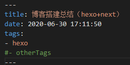

花了几天时间用hexo+githubPages搭了个人博客,主题用Next主题，反正只是作为笔记那样用，实现些简单功能就完事了。
1.hexo博客的搭建
反正都是照着网上流程就行了，这里贴一下自己参考的博客就完事了。
hexo+githubPage–TRHX • 鲍勃
注意：hexo安装时可能会出现WARN或者ERROR，这个可以不用管的
2.安装next主题
用next官网的教程安装即可
http://theme-next.iissnan.com/getting-started.html
3.相关设置
3.1 站点配置文件_config.yml
- 3.1.1 git相关的配置
除了deploy，还要改root和url 由于网上教程的多是git上博客仓库名与用户名一直，所以教程里的站点配置文件
由于网上教程的多是git上博客仓库名与用户名一直，所以教程里的站点配置文件_config.yml只填了deploy部分 - 3.1.2 显示相关配置
将theme改为自己下载的主题，即next（主题要放在themes文件夹内，而且主题文件重命名为next）其他的，看图就完事了1
theme: next

除了以上这些，还有其他配置可选，但是都没改了，就先不介绍了。
3.2 next主题配置文件_config.yml
- 3.2.1 菜单相关配置
同样看图就完事了
- 3.2.2 社交和友链相关配置
看图
- 3.2.3 博文缩略相关配置
看图，左边绿色的是我看博客复制过去的，也可能不用
但是博文的md文件里有<!-- more -->
3.3 一些拓展
3.3.1 建立标签页
hexo默认只有归档页和主页，所以当我们需要其他菜单页面时，需要新建页面，这里就以标签页tags为例在hexo所在文件夹（我的是blog）cmd或者命令行输入
$ hexo new page tags即可在source文件夹内看到多出了一个tags文件夹，打开tags内的index.md修改成下图所示
其实就多了一个
types: tags。其他页（如categories）也可以通过这样实现。对于给博文加标签，则如下图所示
 hexo头部标签相关信息见→ https://hexo.bootcss.com/docs/front-matter.html3.3.2 站内搜索功能
在命令行执行npm install hexo-generator-searchdb --save在站点配置文件新增search内容：
1
2
3
4
5search:
path: search.xml
field: post
format: html
limit: 100 #想要限制的结果数量在主题配置文件修改
local_search，将其enable设置为true
4.小结
在这搭建过程中主要是中途升级了主题卡了一些时间，解决方法是删除旧主题，重新把主题git下来就好了
后面可能还会对博客进行进一步美化，但是目前旧先用着吧